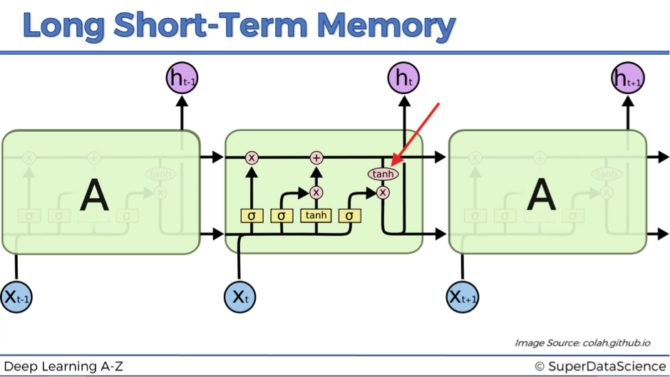

Master in Science in Computer Science, 2018-2019. North Carolina A & T State University,Greensboro,NC-27401
Bachelor of Science in Computer Science & Engineering, 2006-2010 Chittagong University of Engineering & Technology, Chittagong, Bangladesh.
Languages/ Scripting: Java/ Java EE, C, Android, PHP, Python.
Web: JSON, HTML5, CSS,JavaScript.
Databases: Oracle, MySQL.
Web/ App. Servers: Apache Tomcat, XAMPP.
Miscellaneous: Android Studio, Eclipse, Netbeans,Dreamweaver, Hadoop,vmware, Git, OpenGL, Mathlab.
My research area includes both Cyber-Security and Machine Learning.Analyzing on Deep Learning approaches, is one of my research interest. How efficiently different approaches work on the same kind of dataset and what are the limitations and risks of implementing the algorithm are some of my experiments. I have implemented a few network intrusion detection system(NIDS) by using some traditional machine learning approaches such as Supervised and semi-supervised Support Vector Machine and supervised and semi-supervised Random Forest.I have implemented another NIDS using LSTM-RNN, which is a deep-learning approach.